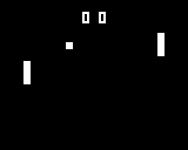
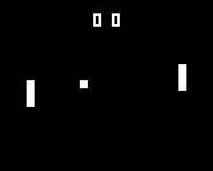
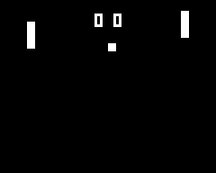
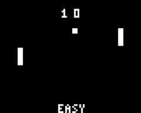

Artificial Intelligence
Step 4
Playing against humans is cool, but adding an AI is much cooler
- Simple artificial intelligence
- Add Randomness
So you just finished your first game, let's improve on it with Artificial Intelligence.
Our first AI
Length 30 minutes
Level Beginner
Prerequisites
- Access to a Gamebuino META
- Completed the Gamebuino META setup workshop
- Completed the Hello, world, Tally counter, Bouncing ball and Pong (2 players)
In the previous workshop, Pong, you built a functional two-player game. We used the arrows to move the left paddle, and the A and B buttons to move the right paddle. With what we saw in the tally counter workshop, you also implemented a way to track and display the scores. Finally, you used if statements with multiple conditions to make the ball bounce. Well, a 2-player tennis game is nice, but what if we wanted to play alone? Turns out, a small Artificial Intelligence can go a long way ;)
But, what is an artificial intelligence? Artificial Intelligence, also called ** AI**, boils down to giving the computer the power to decide things by itself. It is just like bringing the computer to life!
An AI can be very powerful. It has been hot topic for quite some time now, and it can come in many shapes and forms, including some very complex ones. There are even university degrees specialized in AI. But for this workshop, we will go back to the roots of AI. Our AI will control one of the paddles in our Pong game.
First we will see the simplest way to program an AI, by using if statements. Then, in a second part, with the help of randomness, we will make the computer less predictable and way more fun.
Our first computer controlled enemy
Let's start by taking a look at how the computer might play. The computer will control the right paddle (called paddle2 in the previous workshop). Our AI's goal is to prevent the ball to reach the right side of the screen. In other words, the computer must follow the ball with its paddle.
The logic behind the scenes
Such an algorithm would look like this:
If the ball is above the center of the paddle
Then, move the paddle up
Else, if the ball is below the center of the paddle
Then, move the paddle down
Here, we always want to do one of two things: go up or go down. Generally speaking, we want to center the paddle on the ball. To do so, we check if the ball is below the center of the paddle. Since the variable paddle2_posY keeps track of the top of the paddle, then we have to add half the paddle's height to get it's center's Y position. So this give us: paddle2_center = paddle2_posY + paddle_height / 2.
The algorithm introduces a new concept for us: the else. Sometimes you might want to express "If A is true, then do thing 1, else do thing 2". In C/C++, this is translated by :
if (A) {
// Do thing 1
}
else {
// Do thing 2
}
Another awesome aspect of C++ is the else if {...}. Whenever an else is directly followed by an if, then we can write else if () {...} instead of else { if () {...} }. This improves readability quite a bit, but more importantly, we can put as many else ifs as we want in a row (whereas we can only put at most one else per if statement. For example, this is allowed:
if (A) {
// Do a thing
}
else if (B) {
// Do another thing
}
else if (C) {
// Do something else
}
else { // A, B, and C are false
// Do yet again another thing
}
So, to go back to our algorithm, we have an if and an else if. By simply using what we have just learned, it should be easy enough to translate the algorithm. So now...
Coding the AI
You now have all the necessary tools to start making you first artificial intelligence. Start by going over the algorithm, then modify the previous' workshop code (Pong - two players) to match the algorithm. If you have an idea but you are not sure about it, try it out! You have the code, you have the console, it is easy to test something. There is no better way to know if it works than by testing it :)
Small help: to find the center of the paddle, go back to the beginning of this tutorial.
I have put the solution for this right below, so if you still have not searched on you own, this is you last chance ;) Once again, the best way to progress is to do (and not just read about) the thing you want to learn!
Ok, so it is done, your own artificial intelligence! You can now play against your Gamebuino at Pong. But... as you play, you might heve noticed that the opposing paddle follows the exact movement of the ball and rarely makes any mistakes. Let's fix that right away.
Solution
This code is our implementation of the AI, you should have something similar:

void loop() {
//// Update paddle1 (player's paddle)
// Update paddle2 (AI)
if (ball_posY > paddle2_posY + paddle_height / 2) { // If the ball is below the center of the paddle
paddle2_posY = paddle2_posY + 1; // Move downwards
}
else if (ball_posY < paddle2_posY + paddle_height / 2) { // If the ball is above the center of the paddle
paddle2_posY = paddle2_posY - 1; // Move upwards
}
//// Update ball movement and collisions
//// Draw the ball, the paddles, and the score
}
Making our AI less predictable
You have just built a working AI. The computer is capable of following the ball and not losing. It plays correctly, however its behavior is very predictable. 'If the ball is below me, I go down. If the ball is above me, I go up'. This behavior in not very natural looking. The game would be a lot more fun if the AI moved in a more "human" way, and missed the ball from time to time.
Random()
So how do we go about making an unpredictable movement? Well, there is a legend about a function that returns random numbers! And guess what? It's calledrandom():
random(int min, int max) random() is a function that spits out a random integer. This integer is always between min and max-1. So, the instruction a = random(0, 4); means that a could be 0, 1, 2, or 3 (but not 4!). Before starting to work on our advanced AI, let's put random() to the test.
When you built your Pong game, the ball always spawned in the same position whenever a point was scored. Here is the code we wrote:
// Check if the ball exited the screen
if (ball_posX < 0) {
// Reset ball
ball_posX = 20;
ball_posY = 20;
ball_speedX = 1;
ball_speedY = 1;
// Increment player 2's score
score2 = score2 + 1;
}
if (ball_posX > gb.display.width()) {
// Reset ball
ball_posX = 20;
ball_posY = 20;
ball_speedX = 1;
ball_speedY = 1;
// Increment player 1's score
score1 = score1 + 1;
}
By doing so, ALL games started out the same way: the ball spawns in (20, 20) and moved down and to the right. This is a bit repetitive no? random() can save us!
// Check if the ball exited the screen
if (ball_posX < 0) {
// Reset the ball
ball_posX = 20;
ball_posY = random(20, gb.display.height() - 20); // Random position along the Y axis
ball_speedX = 1;
if (random(0, 2) == 1) { // 50% of the time, this is true
ball_speedY = 1;
}
else { // Other 50% of the time
ball_speedY = -1;
}
// Increment player 2's score
score2 = score2 + 1;
}
if (ball_posX > gb.display.width()) {
// Reset ball
ball_posX = 20;
ball_posY = random(20, gb.display.height() - 20); // Random position along the Y axis
ball_speedX = 1;
if (random(0, 2) == 1) { // 50% of the time, this is true
ball_speedY = 1;
}
else { // Other 50% of the time
ball_speedY = -1;
}
// Increment player 1's score
score1 = score1 + 1;
}
So now, the ball will respawn at (20, Y), where Y is a random number. Also, we use if (random(0, 2) == 1) because it is true only every other time. You see, random(0, 2) returns either 0 or 1, so there is a 50% chance of getting a 1. With this, we set the ball to start with an upward motion half of the time, and a downward motion the rest of the time. It is these slight modifications that differentiate a 'meh' game from a great game ;)
In C/C++, if we want to test an equality in a condition, we have to use a double equals sign ==. So if (a == b) is true when a IS EQUAL TO b. This is very important to keep in mind, because if you put a single equals sign, your game will do strange things.

Less predictable == more enjoyable
Let's improve our AI. To make the computer behave more naturally, it needs to not be perfect at following the ball. With random, we can make it so that the enemy paddle has a harder time following the ball. To help the AI out a bit, we will also increase it's speed. With these changes, the game should a lot more fun to play.
Let's start by making a more fluid movement. To do so, we need to create a variable that keeps track of the computer's paddle's speed, just like we did for the ball: paddle2_speedY. Let's look at what we will do with it:
int paddle2_speedY = 0; // Vertical speed of the AI's paddle
void loop() {
//// Update paddle1 (player's paddle)
// Update paddle2 (AI's paddle)
if (ball_posY > paddle2_posY + paddle_height / 2 && random(0, 3) == 1) {
paddle2_speedY = 2; // Move down
} else if (ball_posY < paddle2_posY + paddle_height / 2 && random(0, 3) == 1) {
paddle2_speedY = -2; // Move up
}
paddle2_posY = paddle2_posY + paddle2_speedY; // Update paddle2's position
//// Update ball movement and collisions
//// Draw the ball, the paddles, and the score
}
Here, we added the random(0, 3) == 1 condition. So when the ball is below the paddle's center, the first ** if** is true about once every 3 frames (and it the same is true for the second ** if**). To better understand why this works, imagine the following scenario: the ball is below the paddle, and the paddle is already moving downwards (paddle2_speedY = 2). When the ball ends up above the paddle's center, the paddle's direction should change, but with the random condition, it should take a few frames before the paddle actually decides to go up. And with a little bit of luck, the paddle will miss the ball, and you score a point! 
In the code above, we can generalize random(0, 3) == 1 with random(0, A) == 1 where A = 3. And the bigger** A** gets, the less likely the condition becomes. So in this case, A is related to the AI's reaction speed because if A is bigger, the more frames are necessary for the AI to change directions. We can exploit this finding to change the AI's difficulty, but I will leave this up to you :)
It's your turn!
In this workshop, we created our first AI, then we improved upon it with the random() function. Like at the end of every workshop, I propose a feasible exercise to implement/improve a functionality. Here I want you to make it so the AI can change difficulty with the press of a button. When the player presses the MENU button, the AI switches between "easy" and "hard" play styles.
Tip: To make the difficulty vary, go over the last part of this tutorial.
It's up to you to polish your AI, or to make another one for another game ;)
Show off your talent on social networks with #gamebuino #Pong #AI, we go through them all the time ;)
Solution Example
If you ran out of ideas, here is what we did on our side :) 
#include
// ball attributes
int ball_posX = 20;
int ball_posY = 20;
int ball_speedX = 1;
int ball_speedY = 1;
int ball_size = 3;
// paddle1 attributes
int paddle1_posX = 10;
int paddle1_posY = 30;
// paddle2 attributes
int paddle2_posX = gb.display.width() - 13;
int paddle2_posY = 30;
// Dimensions for both paddles
int paddle_height = 10;
int paddle_width = 3;
// For the AI
int paddle2_speedY = 0; // Vertical speed of the AI's paddle
// Scores
int score1; // Player 1's score
int score2; // Player 2's score
int difficulty = 3; // Level of difficulty. 3 = EASY et 2 = HARD
void setup() {
gb.begin();
}
void loop() {
while (!gb.update());
gb.display.clear();
// Difficulty switch
if (gb.buttons.pressed(BUTTON_MENU)) {
if (difficulty == 3) { // Easy
difficulty = 2; // Change difficulty
}
else { // Hard
difficulty = 3; // Change difficulty
}
}
// Update paddle 1 (player controlled paddle)
if (gb.buttons.repeat(BUTTON_UP, 0)) {
paddle1_posY = paddle1_posY - 1;
}
if (gb.buttons.repeat(BUTTON_DOWN, 0)) {
paddle1_posY = paddle1_posY + 1;
}
// Update paddle2 (AI controlled paddle)
if (ball_posY > paddle2_posY + paddle_height / 2 && random(0, difficulty) == 1) {
paddle2_speedY = 2;
} else if (ball_posY < paddle2_posY + paddle_height / 2 && random(0, difficulty) == 1) {
paddle2_speedY = -2;
}
paddle2_posY = paddle2_posY + paddle2_speedY; // Update paddle2's position
// Update ball
ball_posX = ball_posX + ball_speedX;
ball_posY = ball_posY + ball_speedY;
// Collisions with walls
if (ball_posY < 0) {
ball_speedY = 1;
}
if (ball_posY > gb.display.height() - ball_size) {
ball_speedY = -1;
}
// Collision with paddle1
if ( (ball_posX == paddle1_posX + paddle_width)
&& (ball_posY + ball_size >= paddle1_posY)
&& (ball_posY <= paddle1_posY + paddle_height) ) {
ball_speedX = 1;
}
// Collision with paddle2
if ( (ball_posX + ball_size == paddle2_posX)
&& (ball_posY + ball_size >= paddle2_posY)
&& (ball_posY <= paddle2_posY + paddle_height) ) {
ball_speedX = -1;
}
// Check if the ball exited the screen
if (ball_posX < 0) {
// Reset the ball
ball_posX = 20;
ball_posY = random(20, gb.display.height() - 20); // Random position along the Y axis
ball_speedX = 1;
if (random(0, 2) == 1) { // 50% of the time, this is true
ball_speedY = 1;
}
else { // Other 50% of the time
ball_speedY = -1;
}
// Increment player 2's score
score2 = score2 + 1;
}
if (ball_posX > gb.display.width()) {
// Reset ball
ball_posX = 20;
ball_posY = random(20, gb.display.height() - 20); // Random position along the Y axis
ball_speedX = 1;
if (random(0, 2) == 1) { // 50% of the time, this is true
ball_speedY = 1;
}
else { // Other 50% of the time
ball_speedY = -1;
}
// Increment player 1's score
score1 = score1 + 1;
}
// Draw ball
gb.display.fillRect(ball_posX, ball_posY, ball_size, ball_size);
// Draw paddle1
gb.display.fillRect(paddle1_posX, paddle1_posY, paddle_width, paddle_height);
// Draw paddle2
gb.display.fillRect(paddle2_posX, paddle2_posY, paddle_width, paddle_height);
// Draw scores
gb.display.setCursor(35, 5);
gb.display.print(score1);
gb.display.setCursor(42, 5);
gb.display.print(score2);
// Draw difficulty
gb.display.setCursor(33, gb.display.height() - 5);
if (difficulty == 3) {
gb.display.print("EASY");
}
else {
gb.display.print("HARD");
}
}